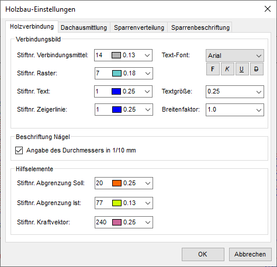

")
")

Einstellungen für die Darstellung des Holzverbindungsbildes mit Beschriftung und zugehörigen Hilfsmittel. Öffnet den Dialog Holzbau-Einstellungen.
|
Hinweis: |
|
Die Symbolik der Verbindungsmittel kann nicht geändert werden. |

Optionen im Dialog "Holzbau-Einstellungen"
 |
Registerkarte Holzverbindung
Verbindungsbild
Stiftnr. Verbindungsmittel Wählen Sie aus der Ausklappliste einen Stift aus, mit dem die Kreise gezeichnet und gefüllt werden. Stiftnr. Raster Wählen Sie den Stift für das Verbindungsbild aus. Stiftnr. Text Die Auswahl eines Stiftes ist nur für „Nicht-Windowsschriftarten“ erforderlich. Die Strichbreite von Windows True Type Fonts werden automatisch in Abhängigkeit von der Schriftgröße geschrieben. Stiftnr. Zeigerlinie Die Zeigerlinie vom Anschlussbild zum beschreibenden Text. Jeder Stiftnummer ist eine bestimmte Farbe und Breite zugeordnet. Text-Font Für die Beschreibung der Anzahl und des gewählten Verbindungsmittels wählen Sie den passenden Schrifttyp. Sie können die Attribute fett, kursiv, unterstrichen und durchgestrichen verwenden. Textgröße Bestimmen Sie die Größe der Schrift in cm der Beschriftung. Breitenfaktor Faktor zur Verzerrung des Textes der Beschriftung. Um Platz zu sparen, können Sie den Breitenfaktor auf einen Wert unter 1,0 setzen. |
Beschriftung Nägel
Angabe des Durchmessers in 1/10 mm
|


Hilfselemente
Stiftnr. Abgrenzung Soll Die Randabstände werden durch Linien dargestellt, deren Farbe Sie hier einstellen können. Stiftnr. Abgrenzung Ist Wählen Sie eine Farbe für die Kennzeichnung der gewählten Randabstände. Stiftnr. Kraftvektor Wenn Sie Horizontal- und Vertikalkräfte angeben, wird der entstehende Kraftvektor in der gewählten Farbe dargestellt. |
Registerkarte Dachausmittlung
Voreinstellungen für die Darstellung automatisch ausgemittelter Dachlinien.
Dachrand
Stiftnummer (Linienbreite und -farbe) und Linientyp für die Darstellung des Dachrandes.
Grate und Kehlen
Stiftnummer (Linienbreite und -farbe) und Linientyp für die Darstellung der Grate und Kehlen.
First
Stiftnummer (Linienbreite und -farbe) und Linientyp für die Darstellung des Firstes.
Registerkarte Sparrenverteilung
Voreinstellungen für die Darstellung der Sparrenverteilung.
Darstellung Polygon
Stiftnummer (Linienbreite und -farbe) und Linientyp für die Darstellung des Dachrandes.
Darstellung Sparrenachsen
Stiftnummer (Linienbreite und -farbe) und Linientyp für die Darstellung der Sparrenachsen
Darstellung Sparrenkanten
Stiftnummer (Linienbreite und -farbe) und Linientyp für die Darstellung der Sparrenkanten
Sparren
Mindestlänge der Sparren, die angezeigt werden sollen. Kürzere Sparren werden nicht angezeigt.
Angabe in Metern.
Registerkarte Sparrenbeschriftung
Voreinstellungen für die Darstellung der Sparrenbeschriftung.
Darstellung Beschriftung
Text-Font, Textgröße, Breitenfaktor, Stiftnr.
Wählen Sie die Schriftart und die übrigen Textparameter aus.
Bezeichnung Verlegung
Hier wird "Sparren" vorgeschlagen. Sie können einen beliebigen anderen Text als Standard eintippen. Fügen Sie nach dem Text ein Leerzeichen hinzu, um den Text von der Querschnitts- und Abstandsangabe bei der Sparrenbeschriftung zu trennen.
Bezeichnung Abstand
Hier wird "a =" vorgeschlagen. Wenn Sie eine andere Bezeichnung festlegen möchten, geben Sie diese im Eingabefeld ein.
Darstellung Richtungspfeil
Stiftnr., Linientyp
Wählen Sie die Stiftnummer und den Linientyp für den Richtungspfeil.
mit Pfeilspitzen
Wenn Sie am Anfang und am Ende eine Pfeilspitze darstellen möchten, setzen Sie einen Haken in die Checkbox.
Darstellung Pfeilspitzen
Stiftnr., Linientyp
Geben Sie für die Darstellung der Pfeilspitzen Stiftnummer und Linientyp an.
Länge / Höhe [cm]
Die Größe der Pfeilspitze wird absolut in Zentimeter unabhängig vom Maßstab vorgegeben.
|
Hinweis: |
|
Wenn Sie Sparrengruppen ändern oder löschen, werden auch die Beschriftungen gelöscht. Sie müssen die Beschriftungen nachträglich wieder hinzufügen. Sollen nur die Beschriftungen gelöscht werden, können Sie [SpBeLö] oder [Text | lösche] und [Linie | lösche] oder [FenÄnd | lösche] benutzen. |
Zugehörige Referenzen: